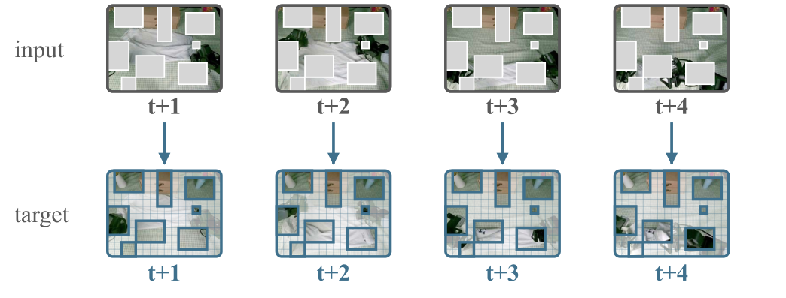
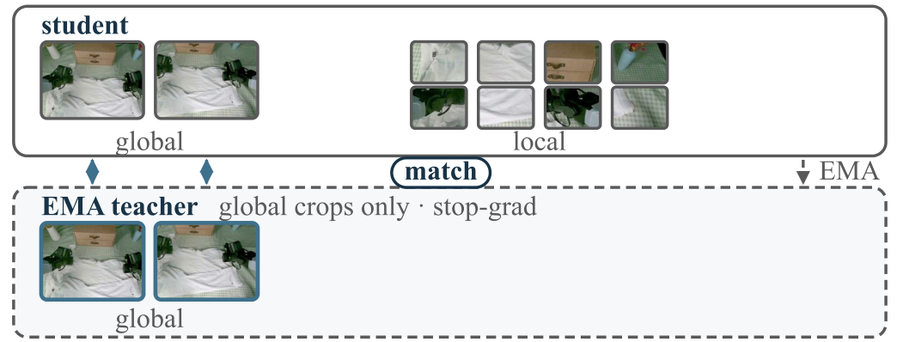
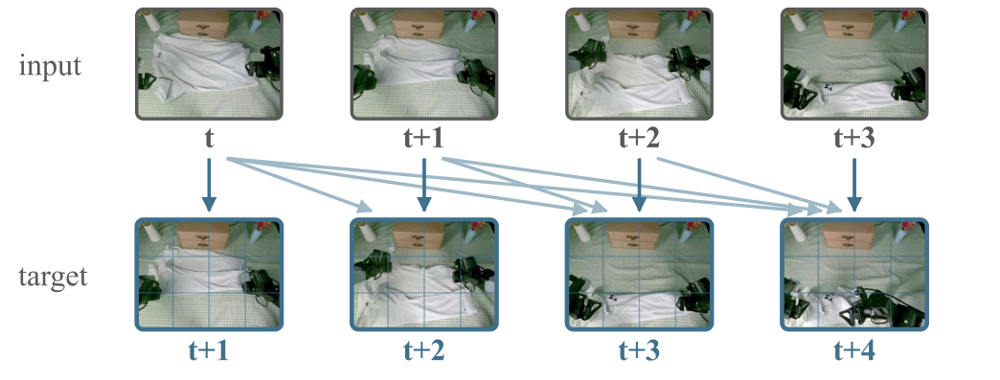
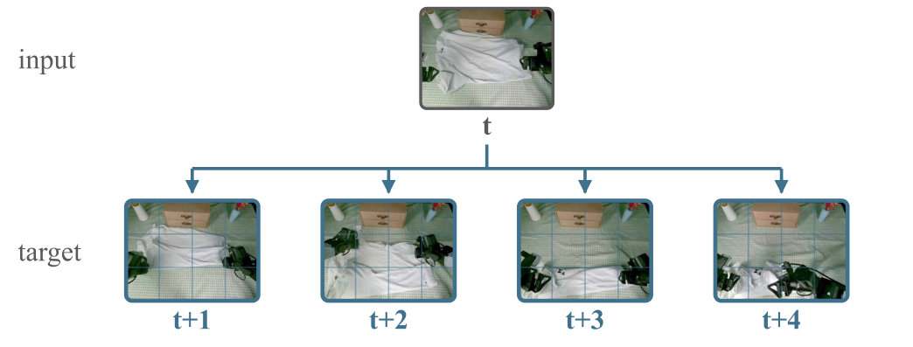
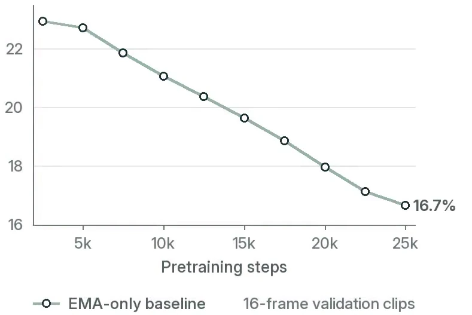
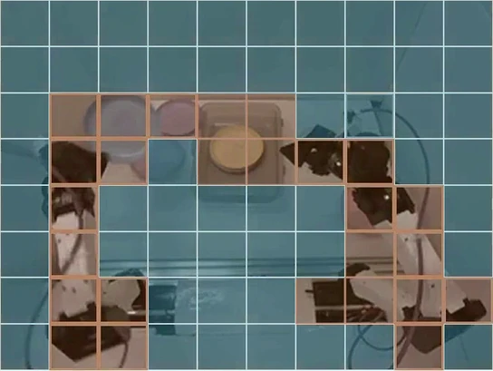
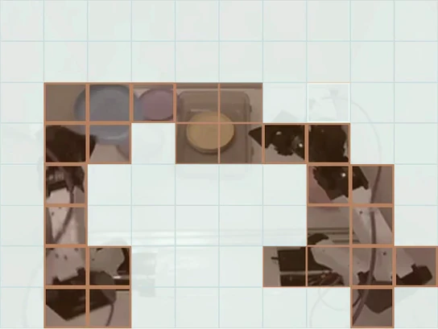

Project video
How can world action models learn compact representations for robot manipulation?
Most WAMs inherit frozen visual latents from pixel VAEs or general vision encoders. Those latents are learned before policy training and can preserve details irrelevant to manipulation.
We learn and scale manipulation-relevant representations in-task by training the visual encoder jointly with the WAM.
Systematically elucidating end-to-end latent learning
We start with an end-to-end JEPA world model and study the design choices that lead to E2EWAM.
Regularizing the representation
Integrating Action Supervision
Which features guide the action expert, and how does action supervision shape them? In the forward pass, we vary which representations the expert reads. In the backward pass, we vary which modules learn from the action loss.
Representations for action decisions
Action expert
Action supervision for representation learning
Success rate (%)
Our choice Joint conditioning and full action gradients
Designing the Visual Supervision Objective
Which visual objective teaches features for manipulation? With action supervision in place, we compare self-supervised objectives with future prediction.




Success rate (%)
Our choice Future-chunk prediction
Regularization Against Representation Collapse
Visual prediction targets evolve during end-to-end training. We test whether existing anti-collapse techniques can keep the learned latents informative.
Exponential moving average (EMA)
The target encoder follows a moving average of the online encoder weights.
Isotropic Gaussian regularization
SIGReg · VISReg
Both regularizers encourage an isotropic Gaussian latent distribution.
Success rate (%)
Our choice EMA targets with action gradients attached
Regularization Against Slow Feature Shortcut
Latents can stay diverse across scenes while losing sensitivity to motion during training.
Temporal dynamics shrinkage

Across patches
Nearly static patches≫Dynamic patches
Copying static patches lowers the loss without learning motion.

Mask static patches
Keep patches with sufficient temporal variation.

Within a moving patch
Bias toward static cues
As training progresses, latents retain static appearance and become less sensitive to motion.
1. Time domain → Frequency domain
2. Split the visual loss
Success rate (%)
Our choice Temporal spectral loss and static patch masking
Scaling up and evaluation
We combine the findings into one training recipe and scale E2EWAM.
- Parameters
- 1.6B
- Hours of pretraining data
- 6,382
End-to-end vs. frozen visual encoders
With the same predictor, action expert, data and training budget, E2EWAM improves on the strongest frozen encoder under distribution shift.
RoboTwin 2.0
LIBERO
- E2EWAM
- Frozen Wan2.2 VAE
- Frozen V-JEPA 2.1
- Frozen DINOv3
Scaling law
With a fixed training budget, increasing pretraining data from 200 to 3,000 hours lowers z-score-normalized validation action MSE and raises real-robot success under distribution shift.
Validation action MSE
R² = 0.949Real-robot OOD success
R² = 0.970MeasuredLog-linear fit
Results
Simulation
Success rates for E2EWAM with 1.6B parameters and 6,382 hours of embodied pretraining.
- LIBERO-Plus
- 84.46%
- RoboTwin
Clean to randomized - 56.78%
- In distribution
- 74%
- Out of distribution
- 44.7%
Real-robot rollouts
Real-robot resultsSelected examples from the evaluation trials.
Physical probing
Linear probe R², mean ± sample SD over five episode splits.
Pretrained encoder comparison
LIBERO
| Encoder | Static | Dynamic | ||||||
|---|---|---|---|---|---|---|---|---|
| End effector | Arm joints | Gripper joints | Object | End effector | Arm joints | Gripper joints | Object | |
| Wan2.2 VAE | 0.826 ± 0.002 | 0.330 ± 0.007 | 0.294 ± 0.005 | 0.972 ± 0.001 | 0.358 ± 0.014 | 0.260 ± 0.010 | 0.175 ± 0.009 | 0.610 ± 0.010 |
| V-JEPA 2.1 | 0.986 ± 0.000 | 0.889 ± 0.002 | 0.875 ± 0.007 | 0.992 ± 0.000 | 0.811 ± 0.009 | 0.637 ± 0.010 | 0.763 ± 0.019 | 0.765 ± 0.006 |
| DINOv3 | 0.988 ± 0.000 | 0.896 ± 0.003 | 0.891 ± 0.005 | 0.994 ± 0.001 | 0.840 ± 0.005 | 0.663 ± 0.009 | 0.781 ± 0.024 | 0.816 ± 0.007 |
| VC-1 | 0.984 ± 0.000 | 0.875 ± 0.002 | 0.878 ± 0.004 | 0.994 ± 0.000 | 0.818 ± 0.005 | 0.640 ± 0.003 | 0.778 ± 0.021 | 0.819 ± 0.013 |
| R3M | 0.992 ± 0.000 | 0.907 ± 0.006 | 0.854 ± 0.009 | 0.996 ± 0.000 | 0.853 ± 0.006 | 0.703 ± 0.007 | 0.749 ± 0.025 | 0.857 ± 0.008 |
| CAIP | 0.983 ± 0.000 | 0.864 ± 0.004 | 0.812 ± 0.005 | 0.993 ± 0.001 | 0.814 ± 0.006 | 0.622 ± 0.009 | 0.712 ± 0.020 | 0.809 ± 0.010 |
| E2EWAM | 0.995 ± 0.000 | 0.936 ± 0.002 | 0.934 ± 0.003 | 0.996 ± 0.000 | 0.892 ± 0.004 | 0.740 ± 0.006 | 0.859 ± 0.014 | 0.848 ± 0.008 |
LIBERO-Plus
| Encoder | Static | Dynamic | ||||||
|---|---|---|---|---|---|---|---|---|
| End effector | Arm joints | Gripper joints | Object | End effector | Arm joints | Gripper joints | Object | |
| Wan2.2 VAE | 0.575 ± 0.004 | 0.182 ± 0.001 | 0.142 ± 0.008 | 0.945 ± 0.001 | 0.212 ± 0.003 | 0.159 ± 0.004 | 0.095 ± 0.008 | 0.464 ± 0.012 |
| V-JEPA 2.1 | 0.967 ± 0.000 | 0.803 ± 0.006 | 0.855 ± 0.001 | 0.986 ± 0.000 | 0.752 ± 0.003 | 0.578 ± 0.006 | 0.726 ± 0.008 | 0.719 ± 0.012 |
| DINOv3 | 0.970 ± 0.000 | 0.811 ± 0.008 | 0.871 ± 0.002 | 0.988 ± 0.001 | 0.771 ± 0.003 | 0.589 ± 0.006 | 0.741 ± 0.013 | 0.766 ± 0.008 |
| VC-1 | 0.955 ± 0.001 | 0.767 ± 0.005 | 0.826 ± 0.003 | 0.987 ± 0.000 | 0.740 ± 0.006 | 0.560 ± 0.007 | 0.717 ± 0.006 | 0.756 ± 0.011 |
| R3M | 0.969 ± 0.000 | 0.813 ± 0.005 | 0.771 ± 0.007 | 0.991 ± 0.000 | 0.768 ± 0.005 | 0.601 ± 0.008 | 0.655 ± 0.011 | 0.779 ± 0.011 |
| CAIP | 0.948 ± 0.000 | 0.735 ± 0.005 | 0.685 ± 0.006 | 0.986 ± 0.000 | 0.682 ± 0.004 | 0.523 ± 0.007 | 0.589 ± 0.009 | 0.742 ± 0.004 |
| E2EWAM | 0.982 ± 0.001 | 0.862 ± 0.006 | 0.910 ± 0.002 | 0.992 ± 0.001 | 0.831 ± 0.002 | 0.663 ± 0.001 | 0.815 ± 0.006 | 0.795 ± 0.009 |
RoboTwin (Randomized)
| Encoder | Static | Dynamic | ||||||
|---|---|---|---|---|---|---|---|---|
| End effector | Arm joints | Gripper joints | Object | End effector | Arm joints | Gripper joints | Object | |
| Wan2.2 VAE | 0.100 ± 0.007 | 0.076 ± 0.007 | 0.047 ± 0.012 | 0.157 ± 0.066 | 0.195 ± 0.004 | 0.228 ± 0.010 | 0.008 ± 0.004 | 0.105 ± 0.038 |
| V-JEPA 2.1 | 0.808 ± 0.005 | 0.690 ± 0.026 | 0.581 ± 0.012 | 0.408 ± 0.026 | 0.612 ± 0.017 | 0.629 ± 0.010 | 0.266 ± 0.014 | 0.400 ± 0.028 |
| DINOv3 | 0.761 ± 0.004 | 0.643 ± 0.022 | 0.577 ± 0.014 | 0.428 ± 0.025 | 0.523 ± 0.005 | 0.536 ± 0.008 | 0.310 ± 0.029 | 0.361 ± 0.037 |
| VC-1 | 0.740 ± 0.006 | 0.624 ± 0.017 | 0.463 ± 0.005 | 0.386 ± 0.028 | 0.549 ± 0.012 | 0.573 ± 0.008 | 0.198 ± 0.009 | 0.403 ± 0.038 |
| R3M | 0.528 ± 0.009 | 0.397 ± 0.008 | 0.268 ± 0.013 | 0.203 ± 0.126 | 0.277 ± 0.013 | 0.281 ± 0.012 | 0.059 ± 0.006 | 0.077 ± 0.054 |
| CAIP | 0.595 ± 0.011 | 0.486 ± 0.021 | 0.369 ± 0.009 | 0.331 ± 0.035 | 0.370 ± 0.012 | 0.407 ± 0.009 | 0.097 ± 0.018 | 0.256 ± 0.040 |
| E2EWAM | 0.850 ± 0.005 | 0.728 ± 0.027 | 0.601 ± 0.006 | 0.431 ± 0.027 | 0.680 ± 0.014 | 0.715 ± 0.006 | 0.313 ± 0.010 | 0.412 ± 0.030 |